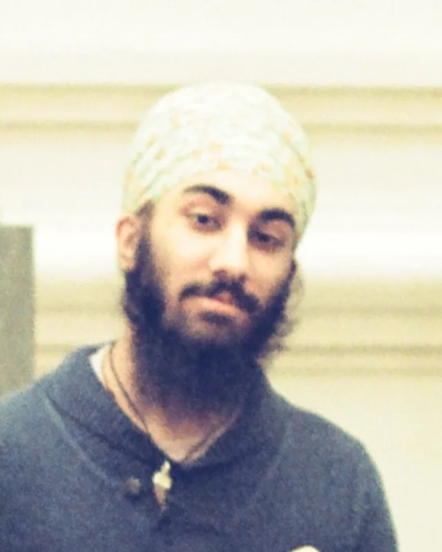

About
What is mathematical biology?
It’s the question I get asked most, so here is my answer. Mathematical biology is the intersection of biology and mathematics — the point where math takes over from biology because of practical limits on what can be measured or tested directly. It covers everything from population modelling to cell growth to drug design, which is where I spend most of my time.
I’m a senior in the Albert Dorman Honors College at NJIT, majoring in Mathematical Biology with minors in Biomedical Engineering in Technology, Philosophy, and History, and honors tracks in Medical Humanities and Global Studies — the first student at ADHC to pursue two. What ties those together is a conviction I keep coming back to: college should teach you how to think, not what to think. It’s most of the reason I’ve ended up in so many corners of academia at once.
- K1
- P2
- Y3
- P4
- F5
- W6
- D7
- D8
- light chain
- heavy chain
- CAP8
A cyclic 8-mer designed against the CDRL3 loop of MS autoantibodies. It bound anti-GlialCAM with a Kd of 0.294 mM, roughly an order of magnitude tighter than its linear counterpart. The project →
Most of my research is the computational design of therapeutic peptides: cyclic peptides built to bind one target and do one job. That work started at KumarLab, continued as the lab moved to the University of Houston, and has since widened into energy-landscape methods at Imperial College London, stochastic models of amyloid aggregation, and reduced descriptions of neuronal dynamics. Alongside all of it, I ride as an EMT.
Beyond my studies, I’m passionate about Sikh history and theology. I teach Sikh history at Khalsa School Virsa and help organise youth camps for the Sikh Sabha of New Jersey, working to build better resources for Sikh students in Sunday classes and camps. I’d like to write in this area eventually; for now I’m still mostly reading.
In my free time I wrestle and practise martial arts, work on my Punjabi, play ping-pong, and sing classical Indian music — Gurmat Sangeet in particular. Since starting undergrad I’ve caught the travel bug. I read a great deal, mostly history, epistemology, and comparative theology.
Elsewhere
- Undergraduate Student Researchers on Campus — The Vector, NJIT, 2024
- ORCID 0009-0002-5159-5879
- Google Scholar
- kabirsinghji@gmail.com